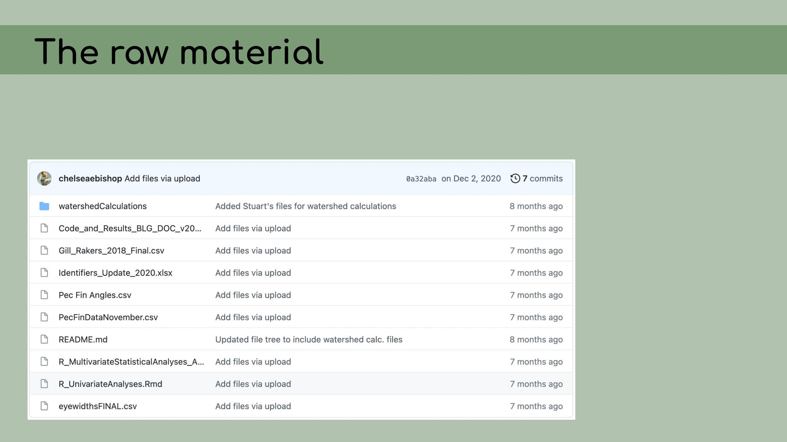
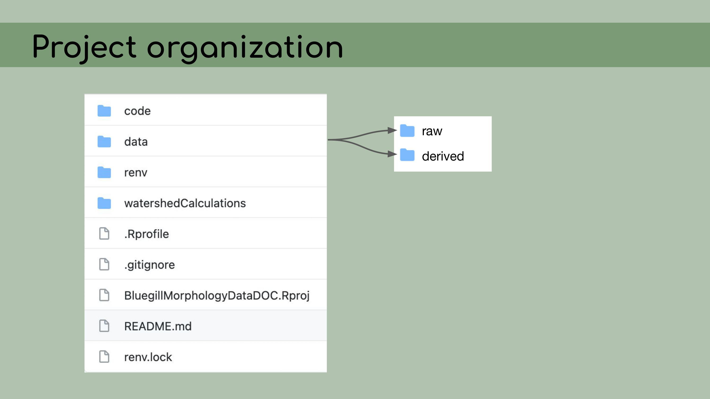
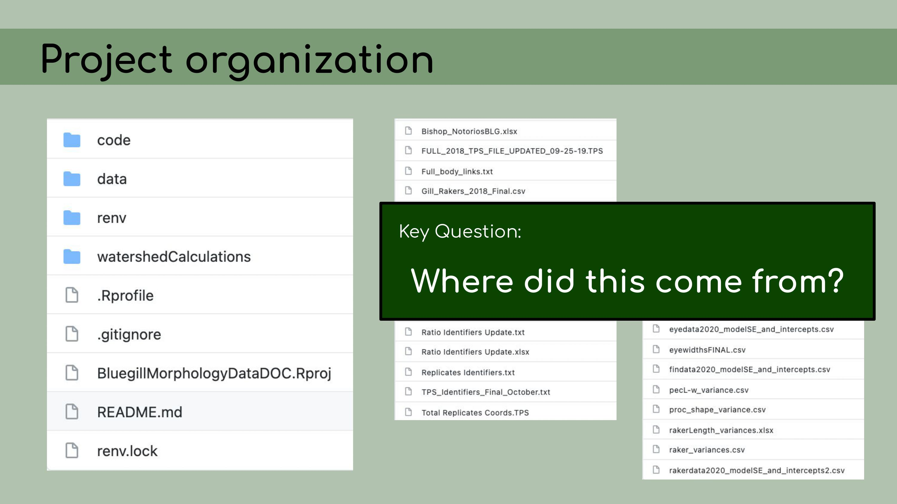
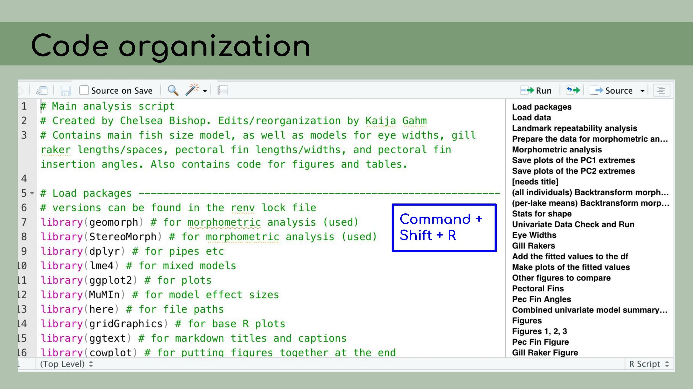
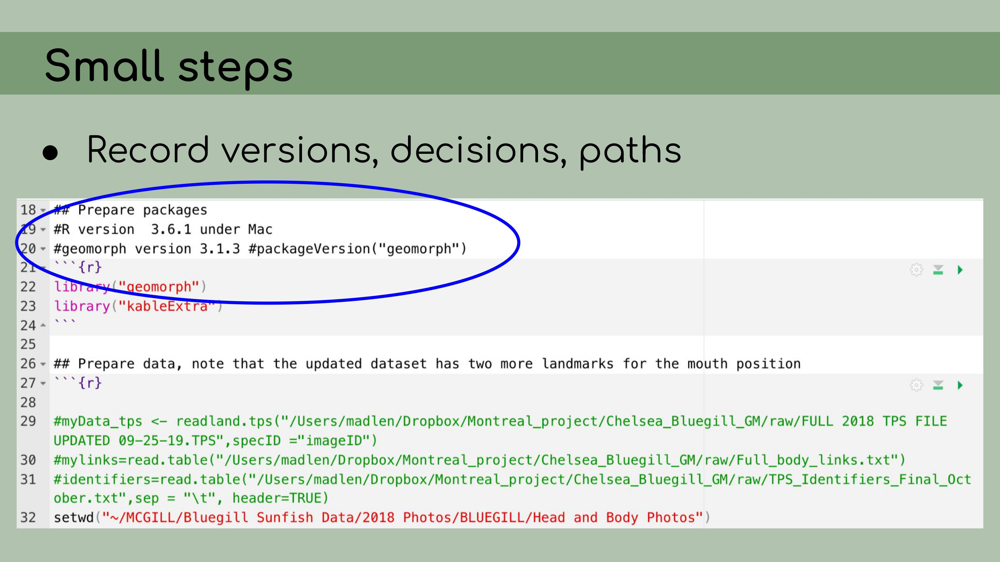
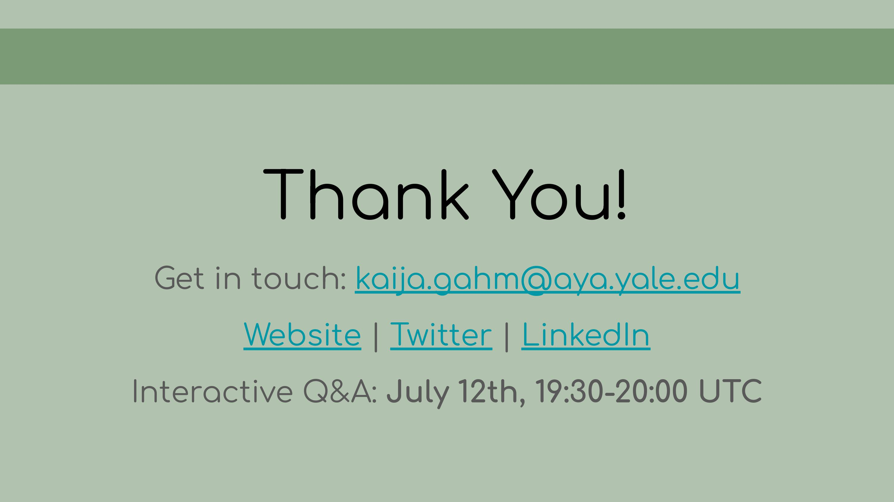

At the 2021 SORTEE conference this past summer, I gave a talk about my experience conducting a reproducibility audit and cleaning up a colleague’s workflow as she prepared to publish her M.S. thesis research.
Here, I’m embedding the video of the talk, and also reproducing it as a blog post (slides and captions) in case you’d rather read than listen/watch.
The slide descriptions are a pretty direct transcription of what I said during the talk, so if the style seems strange for a blog post, that’s why.
Scroll down to watch the video!
Slides and descriptions
 Hello everyone! Thank you for being here. My name is Kaija Gahm, and I’m a data manager at the Cary Institute of Ecosystem Studies. Late last year, my colleague Chelsea had just finished her Master’s thesis, and my supervisor asked me to help her to organize her code and analysis into a reproducible workflow that we could reference in the manuscript that we were putting together.
Hello everyone! Thank you for being here. My name is Kaija Gahm, and I’m a data manager at the Cary Institute of Ecosystem Studies. Late last year, my colleague Chelsea had just finished her Master’s thesis, and my supervisor asked me to help her to organize her code and analysis into a reproducible workflow that we could reference in the manuscript that we were putting together.
In this talk, I’m going to be speaking about my experience implementing data management and reproducibility tools retroactively, for an existing project, even if best practices weren’t used from the beginning. I’ll also discuss organizing and making sense of someone else’s analyses, approaching the project as an outsider. A little bit of background on the project: It consisted of some pretty typical ecological data––measurements of lake dissolved organic carbon, morphometric landmarks of bluegill sunfish, and a bunch of statistical analyses and figures.
A little bit of background on the project: It consisted of some pretty typical ecological data––measurements of lake dissolved organic carbon, morphometric landmarks of bluegill sunfish, and a bunch of statistical analyses and figures. Some of the challenges I knew I was going to face were that the data had largely been edited manually in Excel, or copied and pasted from other files with uncertain origin.
Some of the challenges I knew I was going to face were that the data had largely been edited manually in Excel, or copied and pasted from other files with uncertain origin.
There were many file versions, and it wasn’t really clear how the data and code tied together.
The goal of my work was to compile all of this data and code into a reproducible analysis. I knew that we were going to be storing the data on Figshare; all of the analyses would be conducted in RStudio and stored on GitHub. The data and code could be then referenced in the final manuscript.
To begin my work, I asked Chelsea to start by uploading all of her files to GitHub.
I think GitHub is a very important tool, not just technically, for version control, but also psychologically. If everything was being version controlled, then I would have the power to edit and delete without being burdened by the idea that I might be deleting something very important. I knew that as long as everything was on GitHub, I could always walk the repository back to its original version. My first step in organizing this repository was to set it up as an RStudio Project, which means that it would open a fresh R session for everyone who downloaded the code, and all file paths could be written relative to the root directory.
My first step in organizing this repository was to set it up as an RStudio Project, which means that it would open a fresh R session for everyone who downloaded the code, and all file paths could be written relative to the root directory.
I also implemented renv, which is a great package that allows for managing package versions. This was particularly important in the case of this analysis, because some of the code depended on an old version of the geomorph package for analyzing morphometric landmarks. I personally wasn’t very familiar with the package, so even if I had wanted to update the code to the newest version, I wouldn’t really have been able to. Using renv allowed me to run the code with the old version of the package, and it ensures that anyone who wants to run our analysis in the future will be able to restore the packages from the lockfile and immediately proceed without affecting packages on their own computer.
My next step was to organize the data.
The first principle is that raw data is sacred and should not be modified. So that means no copying and pasting.
Derived data should then be fully reproducible and, by extension, disposable. I should be able to just delete all of the derived data, and then recreate it by re-running the scripts in the pipeline.
Now, that might be a bit of a pain because some of the analyses might take a long time to run, but it would be possible in a fully reproducible analysis.
And my job approaching this project was to distinguish between data that was raw––like maybe it was created manually or it was exported from a program somewhere else––versus data that could be regenerated from the analysis code. This is a list of all the data files that I was originally presented with in the GitHub repository, and it was pretty overwhelming. I had to sort through all of those and figure out which were raw, which were derived, and where they all went in the pipeline.
This is a list of all the data files that I was originally presented with in the GitHub repository, and it was pretty overwhelming. I had to sort through all of those and figure out which were raw, which were derived, and where they all went in the pipeline.
And in order to do this, I asked the key question, ‘Where did this come from?’ For each file, I wanted to know, how was it generated? Can I trace the origin of all the files and their columns? I started out by making a spreadsheet listing out each file, and this seemed like a good idea at the time, but it ended up being pretty overwhelming, and it was hard for Chelsea to go through and answer my questions, especially because I was attacking all the files at once, without regard for their importance or the order that they might go in. I was just trying to get my head around it.
I started out by making a spreadsheet listing out each file, and this seemed like a good idea at the time, but it ended up being pretty overwhelming, and it was hard for Chelsea to go through and answer my questions, especially because I was attacking all the files at once, without regard for their importance or the order that they might go in. I was just trying to get my head around it. Chelsea and I decided that a better approach would be to start with the most recent and up-to-date analysis file; in our case, called ReviewApril2020.
Chelsea and I decided that a better approach would be to start with the most recent and up-to-date analysis file; in our case, called ReviewApril2020. Then, I could look at all of the data files that were read in as inputs. It was much easier, with this reduced set of files, to determine…
Then, I could look at all of the data files that were read in as inputs. It was much easier, with this reduced set of files, to determine… …which ones were raw data and which ones were derived data. So, my next step was, for each of those derived data files, to figure out how to re-create it from the data in the database, using R scripts, so that the process would be fully reproducible.
…which ones were raw data and which ones were derived data. So, my next step was, for each of those derived data files, to figure out how to re-create it from the data in the database, using R scripts, so that the process would be fully reproducible. To do that, I created one R script for each of the derived data files, and I used that R script to read in data from the database stored on Figshare and modify it to generate these ‘FINAL’ csv files. In the background, I kept the original data and used it as a comparison, just to make sure I was accurately recreating that original data.
To do that, I created one R script for each of the derived data files, and I used that R script to read in data from the database stored on Figshare and modify it to generate these ‘FINAL’ csv files. In the background, I kept the original data and used it as a comparison, just to make sure I was accurately recreating that original data. My next step was to organize the code in the analysis files. I had to start by reorganizing a lot of file paths; they had been written as absolute paths, and I rewrote them as relative paths using the wonderful
My next step was to organize the code in the analysis files. I had to start by reorganizing a lot of file paths; they had been written as absolute paths, and I rewrote them as relative paths using the wonderful here package. I clarified a lot of the code by renaming the variables with descriptive names and adding clear comments.
I clarified a lot of the code by renaming the variables with descriptive names and adding clear comments. I also organized the code to make sure it was easy to read and follow.
I also organized the code to make sure it was easy to read and follow. And to do that, I made heavy use of the outline panel within RStudio, which you can access by clicking on this sort of list icon at the top right corner of the script pane.
And to do that, I made heavy use of the outline panel within RStudio, which you can access by clicking on this sort of list icon at the top right corner of the script pane.
You’ll notice that this ‘Load packages’ header corresponds to a line in this document outline, and that actually happens automatically within RStudio.
You can create these header lines by clicking Command + Shift + R on a Mac, and they automatically get added to the outlines.
And then you can also see that I have a lot of packages loaded at the top here, a lot of comments, and everything is just a little bit cleaner and easier to read. I wrote a README to document this project, including an abstract to introduce people to the project, instructions for how to download the data from Figshare and how to run the project, restoring all the packages from the
I wrote a README to document this project, including an abstract to introduce people to the project, instructions for how to download the data from Figshare and how to run the project, restoring all the packages from the renv lock file, and also information about the contributors. Finally, I wanted to emphasize that I had to go over the same scripts multiple times, and sometimes doing a first cleanup of the code helped me realize that reorganizing the code in different way would actually be clearer, and so I ended up doing what felt like the same work twice. I think that that re-tidying––it shouldn’t be dismissed as being inefficient or not doing it right the first time, because in my case, I had to take a lot of time to just get my head around how the code was organized before I could make informed decisions about how to clean it up.
Finally, I wanted to emphasize that I had to go over the same scripts multiple times, and sometimes doing a first cleanup of the code helped me realize that reorganizing the code in different way would actually be clearer, and so I ended up doing what felt like the same work twice. I think that that re-tidying––it shouldn’t be dismissed as being inefficient or not doing it right the first time, because in my case, I had to take a lot of time to just get my head around how the code was organized before I could make informed decisions about how to clean it up. So, I’ve talked about a lot of tools that I used in creating this reproducible pipeline, from Figshare to RStudio and RStudio Projects, GitHub for version control, Google Drawings in my case for creating this flowchart, and
So, I’ve talked about a lot of tools that I used in creating this reproducible pipeline, from Figshare to RStudio and RStudio Projects, GitHub for version control, Google Drawings in my case for creating this flowchart, and renv for organizing packages. And this might be overwhelming if you’ve never used these tools before and it feels like you have a lot of things to learn if you want to start implementing reproducible workflows.
But I want to emphasize that there are smaller things that you can do to move in the right direction, even if you can’t jump right into using best practices from the get-go. For example, don’t be afraid to tell stories with your comments. I like to be very conversational; I like to say ‘Okay, now we’re going to do X’, ‘I noticed this about the output, and that causes me to make this decision about the model’
For example, don’t be afraid to tell stories with your comments. I like to be very conversational; I like to say ‘Okay, now we’re going to do X’, ‘I noticed this about the output, and that causes me to make this decision about the model’
For example here, I wrote, ‘To make these calculations easier, I’m going to….’ do XYZ, and then I have some lines of code.
Now, you’ll notice here that I only have about four lines of code, and a LOT of lines of comments, and not all of my scripts look like that. But I just want to get the point across that it’s really okay to write essays in your code and to have your code comments be informal, conversational and very descriptive.
Something that Chelsea did in her raw code files that I found very helpful when I went through and organized them, was to keep track, in the comments, of package versions and decisions that were made in the analyses, and file paths. So for example, I already discussed how we had to use an older version of the package geomorph, and conveniently, Chelsea had recorded the version number of the older version that she was using, so it was much easier for me to then restore that version when I started using renv.
You’ll notice that this script is far from being perfect; it’s still using absolute file paths, it hasn’t yet been edited to use the here package, but even without using all best practices in reproducibility, just having these introductory comments is really helpful. I want to conclude this talk by just emphasizing that we really need to teach workflow in graduate programs, undergraduate programs, whenever we teach coding. I would argue that, for biologists, workflow, organization, and reproducibility are some of the things that take up the greatest proportion of our research time. They are actually more valuable skills sometimes than the actual statistical analysis. They are also not intuitive.
I want to conclude this talk by just emphasizing that we really need to teach workflow in graduate programs, undergraduate programs, whenever we teach coding. I would argue that, for biologists, workflow, organization, and reproducibility are some of the things that take up the greatest proportion of our research time. They are actually more valuable skills sometimes than the actual statistical analysis. They are also not intuitive.
I think it can be easy, as a student, to assume that if you’re just an organized person, you will magically know how to organize your code. And then it’s easy to get frustrated when that doesn’t come naturally and when no one has really taught you what the best practices are.
I think this resource, written by Jenny Bryan and Jim Hester, ‘What they forgot to teach you about R’, is a great example of this. This resource focuses on a lot of the workflow tactics that I’ve been talking about here, like a project-oriented workflow, and it’s titled ‘What they forgot to teach you about R’. And I think for many students, that’s exactly true. They do forget to teach you the workflow stuff, and that’s sometimes the most important part. Here’s a list of resources that I put together related to the various tools for reproducibility that I’ve talked about in this presentation
Here’s a list of resources that I put together related to the various tools for reproducibility that I’ve talked about in this presentation
And I would be happy to take any questions at the Q&A session right after this talk. Thank you very much.
Video
For the conference, I embedded captions in the video using iMovie, which was a pretty clunky process but was all I had access to at the time. There are some glitches and at one point I accidentally inserted the caption for a previous slide. On the whole, I hope the captions are better than nothing.
Resources
The resource links from the second to last slide didn’t translate well to this format, so here they are:
Happy Git with R (Jenny Bryan and Jim Hester)
Project-oriented workflow with RStudio projects (Jenny Bryan)
Using the here package
How to use renv
Keeping a Paper Trail: Data Management Skills for Reproducible Science(Kate Laskowski)
Get an embed link for a Google drawing so you can put it into e.g. a README
Using the `tree` command in the terminal to make a file tree
The document outline in RStudio
Headers and comments in RStudio (Y. Wendy Hyunh)
What they forgot to teach you about R (Jenny Bryan and Jim Hester)
Finally, you can download the video and the annotated slides from OSF here.